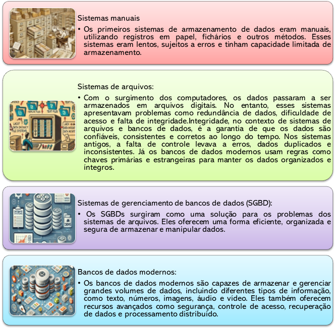

Capítulo 1: Fundamentos de Bancos de Dados
1.1 Dados e Informações: o ponto de partida
Antes de estudarmos os bancos de dados espaciais, é fundamental compreender a diferença entre dado e informação, pois ela orienta a forma como interpretamos a realidade geográfica.
Um dado é um valor isolado e bruto, como "população = 5231" ou "temperatura = 32°C". Esses números, sozinhos, não respondem a perguntas analíticas. Já a informação surge quando os dados são organizados e contextualizados, permitindo concluir, por exemplo, que "o bairro X apresenta maior densidade populacional que o bairro Y".
 O papel dos bancos de dados é justamente transformar dados dispersos em informação
estruturada. No geoprocessamento, trabalhamos com grandes
volumes de registros — coordenadas, atributos, imagens e medições ambientais.
Sem organização, esses dados seriam apenas fragmentos soltos. O banco de dados
fornece a base para consultas, cruzamentos e análises que dão sentido ao
material coletado.
O papel dos bancos de dados é justamente transformar dados dispersos em informação
estruturada. No geoprocessamento, trabalhamos com grandes
volumes de registros — coordenadas, atributos, imagens e medições ambientais.
Sem organização, esses dados seriam apenas fragmentos soltos. O banco de dados
fornece a base para consultas, cruzamentos e análises que dão sentido ao
material coletado.
Essa transformação segue uma hierarquia conceitual bastante utilizada: dado → informação → conhecimento → decisão. Em cada etapa, os registros brutos ganham significado, permitindo testar hipóteses e chegar a decisões fundamentadas.
Esse processo é essencial para superar o “achismo”.
Afirmações como "a região Norte é mais populosa que a região Sul" ou "o Rio Itacorubi é o mais poluído" permanecem como opiniões até serem confrontadas com números. O banco de dados possibilita verificar tais hipóteses com evidências, transformando especulação em conhecimento fundamentado.
 É importante destacar também o princípio conhecido como “garbage in, garbage out” (ou, em tradução livre,
lixo que entra, lixo que sai). Isso significa que, se os dados
inseridos no banco forem incorretos, incompletos ou mal coletados, as
informações e decisões resultantes também serão comprometidas. A qualidade da
informação depende diretamente da qualidade dos dados de origem.
É importante destacar também o princípio conhecido como “garbage in, garbage out” (ou, em tradução livre,
lixo que entra, lixo que sai). Isso significa que, se os dados
inseridos no banco forem incorretos, incompletos ou mal coletados, as
informações e decisões resultantes também serão comprometidas. A qualidade da
informação depende diretamente da qualidade dos dados de origem.
Portanto, um Sistema de Informação Geográfica (SIG) vai além da elaboração de mapas atrativos. Sua função central é responder questões e apoiar decisões, como: quais áreas apresentam risco de inundação? Em qual bairro há maior incidência de casos de dengue? Qual trajeto de transporte público é mais eficiente?
Todas essas análises dependem de dados organizados em bancos. É essa estrutura que sustenta a produção de informações confiáveis e relevantes.
1.2 O que é um banco de dados?
 Em sua forma mais simples, um banco de dados é uma coleção organizada
de informações. No contexto do geoprocessamento, isso significa organizar dados
espaciais (vetoriais, Raster e\ou atributos). Assim como organizamos dados no
nosso dia a dia — como listas de compras, contatos no celular ou uma planilha
de gastos — os bancos de dados digitais fazem isso em escala muito maior,
permitindo armazenar, acessar e analisar grandes volumes de informações com
eficiência.
Em sua forma mais simples, um banco de dados é uma coleção organizada
de informações. No contexto do geoprocessamento, isso significa organizar dados
espaciais (vetoriais, Raster e\ou atributos). Assim como organizamos dados no
nosso dia a dia — como listas de compras, contatos no celular ou uma planilha
de gastos — os bancos de dados digitais fazem isso em escala muito maior,
permitindo armazenar, acessar e analisar grandes volumes de informações com
eficiência.
Para quem trabalha com geoprocessamento, imagine um mapa digital com diversas camadas: ruas, rios, bairros, áreas verdes. Cada uma dessas camadas contém atributos (como o nome de uma rua ou o tipo de vegetação), que precisam ser organizados de forma estruturada para que possamos fazer consultas, cruzar dados e gerar análises espaciais. O banco de dados é o sistema que torna tudo isso possível.
Definição formal: Um banco de dados é um conjunto de dados inter-relacionados, armazenados de forma organizada e controlada, para atender a um ou mais propósitos específicos.
Analogias com sistemas de organização do mundo real:
|
Biblioteca geográfica: Assim como uma biblioteca organiza livros por tema, autor e localização nas estantes, um banco de dados organiza dados espaciais por tipo (rios, estradas, edificações), localização (coordenadas geográficas) e atributos (nome, classificação, data de atualização), facilitando a busca e o cruzamento dessas informações. |
Figura 1‑2 : Organização de dados espaciais como em uma biblioteca. |
|
Camadas de um mapa digital: Imagine um mapa no QGIS contendo diferentes camadas — uma com escolas, outra com vias, outra com zonas de risco. Cada camada representa uma tabela com informações geográficas e descritivas. O banco de dados permite gerenciar todas essas camadas de forma organizada, associando dados e permitindo análises integradas, como “quais escolas estão em área de risco?”. |
Figura 1‑3 : Camadas de mapa integradas para análise espacial. |
|
Cadastro técnico urbano: Prefeituras utilizam sistemas de banco de dados para gerenciar informações sobre imóveis, logradouros, redes de drenagem, arborização e muito mais. Cada elemento é cadastrado em uma base de dados espacial, com atributos como tipo, estado de conservação, localização e vínculo com outras estruturas. Isso permite consultas rápidas e tomadas de decisão fundamentadas. |
Figura 1‑4 : Representação do cadastro técnico urbano e seus atributos |


1.3 A evolução dos bancos de dados:
Os bancos de dados evoluíram ao longo do tempo, desde os sistemas manuais até os sistemas digitais complexos que utilizamos hoje.
Tabela 1‑1 : Evolução dos sistemas de armazenamento de dados: dos métodos manuais aos modernos.

Importância dos bancos de dados no contexto atual, com ênfase no geoprocessamento:
Os bancos de dados desempenham um papel fundamental no contexto atual, impulsionando diversas áreas do conhecimento e da atividade humana. No geoprocessamento, sua importância é ainda mais evidente, pois permitem armazenar, manipular e analisar grandes volumes de dados geográficos de forma eficiente.
1.4 Exemplos de aplicações de bancos de dados em geoprocessamento:
 Armazenamento de dados de sensoriamento remoto: Bancos de
dados são utilizados para armazenar e gerenciar grandes volumes de imagens de
satélite e outros dados de sensoriamento remoto, permitindo o acesso rápido e a
análise eficiente dessas informações.
Armazenamento de dados de sensoriamento remoto: Bancos de
dados são utilizados para armazenar e gerenciar grandes volumes de imagens de
satélite e outros dados de sensoriamento remoto, permitindo o acesso rápido e a
análise eficiente dessas informações.
Cadastro de imóveis urbanos: Bancos de dados geográficos são utilizados para armazenar informações sobre a localização, as características e o histórico de imóveis urbanos, auxiliando na gestão territorial e no planejamento urbano.
Gestão de recursos naturais: Bancos de dados são utilizados para armazenar informações sobre a distribuição, a qualidade e a disponibilidade de recursos naturais, como água, florestas e minerais, auxiliando na gestão ambiental e na tomada de decisões.
1.5 Sistemas de Gerenciamento de Bancos de Dados (SGBD).
Um Sistema de Gerenciamento de Banco de Dados (SGBD) é um conjunto de softwares que permite aos usuários interagirem com um banco de dados. Ele atua como uma interface entre o usuário e o banco de dados, facilitando a criação, o acesso, a manipulação e o gerenciamento dos dados.0F[1]
1.5.1 Funções de um SGBD:
Um SGBD desempenha diversas funções essenciais para o funcionamento eficiente e seguro de um banco de dados:
|
|
Armazenamento de dados: O SGBD é responsável por armazenar os dados de forma organizada e eficiente, utilizando estruturas de armazenamento adequadas ao tipo de dado. No contexto do geoprocessamento, isso envolve armazenar tanto os dados alfanuméricos (atributos) quanto os dados geométricos (localização, forma). |
|
|
Recuperação de dados: O SGBD permite recuperar os dados armazenados de forma rápida e eficiente, através de consultas e filtros. No geoprocessamento, isso permite buscar informações espaciais com base em critérios como localização, atributos geográficos ou relações topológicas. |
|
Atualização de dados: O SGBD permite modificar os dados armazenados, inserindo novos registros, alterando registros existentes ou excluindo registros. No geoprocessamento, isso é fundamental para manter os dados geográficos atualizados, refletindo as mudanças no mundo real. |
|
|
Segurança de dados: O SGBD oferece mecanismos para proteger os dados contra acessos não autorizados, perdas ou danos. Isso inclui controle de acesso, autenticação de usuários, criptografia e backups. No geoprocessamento, a segurança dos dados geográficos é crucial, especialmente quando se trata de informações confidenciais ou estratégicas. |
|
|
|
Controle de concorrência: O SGBD gerencia o acesso simultâneo de múltiplos usuários aos dados, garantindo que as operações não interfiram umas nas outras e que os dados permaneçam consistentes. No geoprocessamento, isso é importante quando vários profissionais trabalham no mesmo projeto, acessando e modificando os mesmos dados geográficos. |
|
|
Integridade de dados: O SGBD garante que os dados armazenados sejam precisos, consistentes e confiáveis, aplicando regras e restrições para evitar erros e inconsistências. No geoprocessamento, isso é fundamental para garantir a qualidade dos dados geográficos e a precisão das análises espaciais. |


1.6 Arquitetura de um SGBD:
Um SGBD é composto por diversos componentes que interagem entre si para fornecer as funcionalidades necessárias. Os principais componentes são:
Hardware: A infraestrutura física que suporta o SGBD, incluindo servidores, dispositivos de armazenamento e rede.
Software: Os programas que compõem o SGBD, incluindo o sistema de gerenciamento do banco de dados, as ferramentas de administração e as interfaces de acesso aos dados.
Dados: As informações armazenadas no banco de dados, incluindo os dados alfanuméricos e os dados geográficos.
Usuários: As pessoas que interagem com o SGBD, incluindo os administradores do banco de dados, os desenvolvedores de aplicações e os usuários finais.
Procedimentos: As regras e os processos que governam o uso e o gerenciamento do banco de dados.
Figura 1‑6: Componentes de um Banco de dados
1.7 Tipos de SGBD e suas características:
Existem diferentes tipos de Sistemas de Gerenciamento de Bancos de Dados (SGBD), cada um com características e funcionalidades distintas, projetados para atender a diferentes necessidades de armazenamento e manipulação de dados. Podemos agrupá-los em duas categorias principais: SGBDs que seguem o modelo relacional e aqueles que adotam modelos não relacionais.
1.7.1 SGBDs Relacionais: Estrutura e Organização dos Dados
 Os SGBDs relacionais, como PostgreSQL, MySQL e SQLite,
são construídos sobre o modelo relacional, que se destaca pela organização dos
dados em tabelas bem estruturadas. Imagine uma planilha eletrônica: cada tabela
é composta por linhas, que representam os registros ou entidades do mundo real,
como pessoas, cidades ou equipamentos, e colunas, que definem os campos ou
atributos que descrevem essas entidades, como nome, localização ou data de
criação. Essa forma de organização facilita a consulta, o cruzamento e a
integridade dos dados, tornando o modelo relacional ideal para diversas
aplicações, inclusive no geoprocessamento.
Os SGBDs relacionais, como PostgreSQL, MySQL e SQLite,
são construídos sobre o modelo relacional, que se destaca pela organização dos
dados em tabelas bem estruturadas. Imagine uma planilha eletrônica: cada tabela
é composta por linhas, que representam os registros ou entidades do mundo real,
como pessoas, cidades ou equipamentos, e colunas, que definem os campos ou
atributos que descrevem essas entidades, como nome, localização ou data de
criação. Essa forma de organização facilita a consulta, o cruzamento e a
integridade dos dados, tornando o modelo relacional ideal para diversas
aplicações, inclusive no geoprocessamento.
A grande força dos SGBDs relacionais reside na capacidade de estabelecer relações bem definidas entre essas tabelas. Isso é feito através do uso de chaves primárias, que identificam de forma única cada registro em uma tabela, e chaves estrangeiras, que criam os vínculos entre as tabelas. Essa estrutura permite garantir a integridade dos dados, evitando inconsistências e redundâncias, e realizar consultas complexas de forma eficiente, utilizando a linguagem SQL (Structured Query Language)1F[2].
1.7.2 SGBDs Não Relacionais: Flexibilidade e Escalabilidade
Os SGBDs não relacionais, também conhecidos como NoSQL (Not Only SQL), representam uma alternativa aos SGBDs relacionais, oferecendo modelos de dados mais flexíveis e escaláveis. Em vez de tabelas, eles utilizam diferentes estruturas para armazenar as informações, como:
- Chave-Valor: Armazenam dados em pares de chave e valor, de forma semelhante a um dicionário, onde cada chave identifica um valor (ex: Redis).
- Documento: Armazenam dados em documentos semiestruturados, como JSON ou XML, que podem conter diferentes tipos de informação e ter uma estrutura mais complexa (ex: MongoDB).
- Coluna: Armazenam dados em colunas em vez de linhas, o que pode ser mais eficiente para consultas que envolvem a recuperação de colunas específicas (ex: Cassandra).
- Grafo: Armazenam dados em nós e arestas, representando as relações entre os dados de forma explícita, o que é útil para aplicações que exploram conexões complexas (ex: Neo4j).
Essa flexibilidade permite que os SGBDs não relacionais se adaptem a diferentes tipos de dados, estruturados ou não estruturados, e que escalem horizontalmente para lidar com grandes volumes de informação e alta demanda de acesso. Eles podem ser especialmente úteis em aplicações de geoprocessamento que envolvem o processamento de grandes volumes de dados não estruturados, como dados de redes sociais, dados de sensores em tempo real ou dados de modelos de terreno complexos, onde a velocidade e a escalabilidade são mais importantes que a consistência rígida dos dados.
No entanto, é importante notar que os SGBDs não relacionais geralmente oferecem menos garantias de integridade e consistência dos dados, possuem linguagens de consulta menos padronizadas e um conjunto de ferramentas e recursos menos maduro em comparação com os SGBDs relacionais.

Figura 1‑7: Modelos NoSQL: chave-valor, documento, coluna e grafo — usados para grandes volumes de dados.
1.8 Banco de dados no contexto do geoprocessamento
 Essa capacidade de estruturar e relacionar dados é
fundamental. Pense em um mapa digital: ele contém diversas camadas de
informação, como estradas, rios, cidades, etc. Um SGBD relacional permite
armazenar cada uma dessas camadas em uma tabela, definindo os atributos
relevantes para cada elemento (nome da rua, tipo de rio, população da cidade) e
as relações entre eles (uma cidade pertence a um estado, uma estrada cruza um
rio).
Essa capacidade de estruturar e relacionar dados é
fundamental. Pense em um mapa digital: ele contém diversas camadas de
informação, como estradas, rios, cidades, etc. Um SGBD relacional permite
armazenar cada uma dessas camadas em uma tabela, definindo os atributos
relevantes para cada elemento (nome da rua, tipo de rio, população da cidade) e
as relações entre eles (uma cidade pertence a um estado, uma estrada cruza um
rio).
No universo dos bancos de dados espaciais, existem diferentes caminhos que podem ser seguidos, e a escolha entre eles depende dos objetivos do projeto, da complexidade dos dados e das ferramentas disponíveis.
Entre as opções mais utilizadas no geoprocessamento, destacam-se os bancos baseados em arquivos, como o GeoPackage (baseado em SQLite), e os sistemas mais robustos de banco de dados em rede, como o PostgreSQL com a extensão PostGIS. Ambos têm suas vantagens, e é importante conhecer suas diferenças para fazer escolhas conscientes.
O GeoPackage é uma alternativa leve, prática e extremamente útil para projetos de pequeno e médio porte. Ele funciona como um arquivo único que armazena tanto os dados vetoriais quanto as tabelas associadas, incluindo coordenadas, atributos e estilos. Por ser baseado em SQLite, ele pode ser aberto e manipulado diretamente dentro do QGIS, sem a necessidade de instalação de servidores ou configurações complexas. Isso o torna ideal para quem está começando, para ambientes educacionais ou para trabalhos individuais.
 Já o PostgreSQL, especialmente quando combinado
com a extensão PostGIS, é a escolha preferida para projetos maiores,
colaborativos ou que demandam automação, segurança e desempenho em ambientes
multiusuário. Com ele, é possível executar análises espaciais avançadas,
realizar consultas complexas com eficiência e controlar acessos de diferentes
usuários em rede. Por outro lado, exige instalação, configuração de servidor e
uma curva de aprendizado um pouco maior.
Já o PostgreSQL, especialmente quando combinado
com a extensão PostGIS, é a escolha preferida para projetos maiores,
colaborativos ou que demandam automação, segurança e desempenho em ambientes
multiusuário. Com ele, é possível executar análises espaciais avançadas,
realizar consultas complexas com eficiência e controlar acessos de diferentes
usuários em rede. Por outro lado, exige instalação, configuração de servidor e
uma curva de aprendizado um pouco maior.
Em resumo:
· GeoPackage / SQLite:
o ✅ Leve, portátil, sem necessidade de servidor
o ✅ Funciona bem em projetos individuais ou educacionais
o 📦 Armazena todas as camadas e tabelas em um único arquivo.
o 🔗 Permite relacionar tabelas com dados espaciais e não espaciais.
o 🧭 Suporta dados vetoriais e raster no mesmo arquivo.
o 💻 Funciona sem necessidade de servidor ou conexão com a internet.
o 🌍 Compatível com padrões abertos (OGC) e com diversos softwares SIG.
o 🛠️ É manipulado facilmente no QGIS, com recursos de edição, relacionamento e visualização.
o ❌ Não é ideal para múltiplos usuários simultâneos
o ❌ Algumas limitações em operações espaciais mais avançadas
· PostgreSQL / PostGIS:
o ✅ Potente, escalável, ideal para ambientes profissionais
o ✅ Suporte a múltiplos usuários e análises espaciais complexas
o ❌ Requer instalação, configuração e manutenção
o ❌ Curva de aprendizado mais elevada
Nesta apostila, começaremos com a abordagem mais acessível, utilizando o SQLite através do formato GeoPackage, integrando-o ao QGIS e ao DB Browser. A construção do conhecimento será feita de forma progressiva, e posteriormente exploraremos o ambiente mais completo do PostGIS, para que você possa comparar as abordagens e escolher a mais adequada à sua realidade profissional.
1.9 Comparativo de Manipulação de Dados Espaciais
Aqui iremos apresentar um comparativo entre ferramentas bastante utilizadas para manipular e gerenciar dados espaciais: QGIS e PgAdmin (PostGIS). O objetivo é analisar e destacar as diferenças, vantagens e limitações de cada uma dessas ferramentas ao longo das diversas etapas de trabalho com dados espaciais: criação das tabelas, inserção e edição de informações, aplicação de regras e restrições, visualização dos dados espaciais e sua integração com projetos geográficos.
A seguir, a tabela apresenta um resumo das principais características dessas três ferramentas, ajudando você a compreender em quais contextos cada uma pode ser mais adequada para seu trabalho.
Tabela 1‑2: Comparativo entre QGIS e PgAdmin/PostGIS quanto à criação, edição e gerenciamento de dados espaciais.
|
Aspecto |
QGIS |
PgAdmin (PostGIS) |
|
Criação de tabelas |
Interface gráfica simples, porém, limitada em regras e tipos de dados. |
Totalmente baseado em SQL, com suporte completo a tipos e restrições avançadas. |
|
Inserção de dados |
Interface amigável, porém, suscetível a erros se houver regras no banco. |
Inserção por SQL ou ferramentas auxiliares; ideal para grandes volumes de dados. |
|
Edição de dados |
Muito prática para edição manual e visualização, com suporte a atributos e geometria. |
Edição direta via SQL; ideal para automações e ajustes estruturados. |
|
Regras e restrições (CHECK, NOT NULL, FK) |
Parcialmente suportado. Nem todas as regras são respeitadas na interface de edição. |
Alta robustez em regras, incluindo relacionamentos espaciais complexos. |
|
Visualização espacial |
Excelente. Visualização integrada ao projeto, simbologia, filtros e expressões. |
Depende de integração com ferramentas como QGIS ou clientes GIS web. |
|
Integração com arquivos espaciais |
Nativa e ampla: suporta shapefiles, GeoPackage, GeoJSON, etc. |
Alta integração com shapefiles, GeoJSON, APIs e dados em rede. |
|
Curva de aprendizado |
Baixa. Recomendado para iniciantes em SIG. |
Alta. Recomendado para usuários avançados e administradores de dados espaciais. |
|
Indicado para... |
Edição e análise espacial cotidiana, criação de mapas e projetos interativos. |
Gerenciamento de grandes bancos de dados espaciais multiusuários. |
Neste curso, utilizaremos inicialmente a interface do QGIS para criar e editar as tabelas. Apesar de suas limitações, ela é ideal para que os alunos compreendam os fundamentos dos bancos de dados de forma visual e prática. Mais adiante, retornaremos a este tema com uma abordagem mais técnica, utilizando comandos SQL para reforçar a integridade dos dados diretamente no banco.